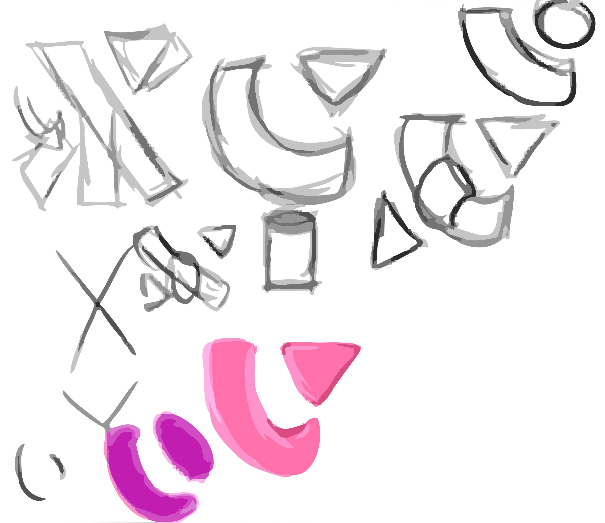

Sketch
Software: Adobe Photoshop & Paint Tool SAI
Class: HUW 112 - Introduction to New Media
Date: 2018
Designed a logo by creatively merging capital letters X and Y, yielding an image reminiscent of the Japanese character い(i) and the art of origami (see second image). "い-adjectives" constitute a specific category of adjectives in the Japanese language. Their primary function is to describe nouns, and they can adopt various endings to modify their meanings. Also, "い-adjectives" excel at describing nouns. For example, a big cat is referred to as 大きい猫, a beautiful painting as 美しい絵, and an interesting book as 面白い本. The "〜い" ending, which lends its name to this category of adjectives, is merely one of several possible endings. Each of these endings conveys distinct types of information, including tense (present or past) and truth value (positive or negative). This serves as a prominent distinction from "na-adjectives," which rely on an additional word (either "だ" or "です") to indicate tense and truth information.
Incorporated the phonetic sound "Yi," aligning with my first name's pronunciation in both Japanese and Chinese as "怡" (Yi).
Conceptualized the process of folding, visually depicted in the second image.
In additioon, my logo looks like a computer switch icon, so I changed the orientation of ellipse, and this logo can be used for tech companies. So, this logo can be used for computer-related skills, representing my proficiency in web design and C++.After completing my college education, I also ventured into producing keychains and logo stickers.
VS